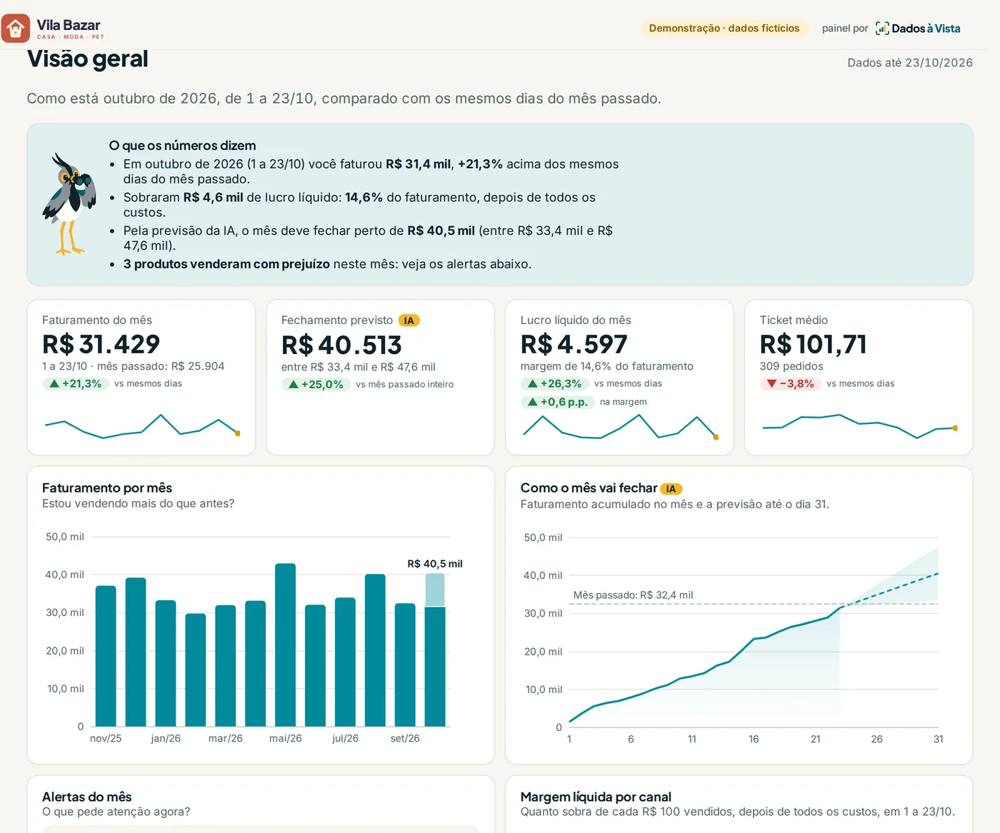

Vendo bem, mas não sei se sobra dinheiro
Margem real de cada produto e de cada lugar onde você vende, depois de comissão, frete e imposto.
Dados e IA para pequenas empresas
Vendas, margem, clientes, caixa e estoque num painel só, com os números que já estão no seu sistema, na sua loja ou na sua planilha. Com login, no computador e no celular. No dia 1, um resumo do mês e, se você quiser, previsões e perfis de clientes feitos com IA e uma conversa sobre o que os números estão dizendo.
Para qualquer tipo de negócio · Atendimento 100% online


Integra com a maioria dos sistemas de pequenas empresas: marketplaces, lojas virtuais, sistemas de gestão e planilhas
Você se reconhece?
Margem real de cada produto e de cada lugar onde você vende, depois de comissão, frete e imposto.
Caixa das próximas semanas, com previsão feita por IA.
Contas a receber vencidas, por cliente e por tempo de atraso.
Os números chegam do seu sistema. Você só abre e olha.
Produtos mais vendidos, parados e com estoque baixo.
Previsão com IA de como o mês vai fechar, a tempo de reagir.
Para pequenas empresas de qualquer tipo, com os números num sistema ou numa planilha: lojas online, comércio, distribuidoras, serviços e pequenas indústrias. Você escolhe os temas do seu painel pelo que precisa acompanhar.
Faturamento por onde você vende, por vendedor e por produto, o lucro real de cada um depois de comissão, frete e imposto, e a previsão de como o mês vai fechar.
Contas a receber e a pagar, quem está devendo, o fluxo de caixa das próximas semanas e o resultado do mês, depois das despesas fixas.
Quem compra sempre, quem sumiu e quem tem mais chance de voltar, com perfis de clientes agrupados pela IA.
O que vai acabar, o que comprar e quanto, e o dinheiro parado em produto que não sai.
Usa um sistema que não está na lista ou só planilhas? Conte na reunião: a gente avalia sem compromisso, e há uma planilha padrão para quem não tem sistema.
O que aparece no painel
▲ +18% previsto para o fechamento, contra o mesmo mês do ano passado
▼ 2 produtos vendem com prejuízo
! R$ 4.380 há mais de 60 dias
! Semana 3 fecha no negativo
IA Indicador calculado por um modelo de inteligência artificial treinado só com os dados da sua empresa, exclusivo para aquele indicador, como as previsões de vendas e de caixa e os perfis de clientes.
Do primeiro contato ao acompanhamento
Por vídeo. Você conta como acompanha o negócio hoje e eu mostro como seria o seu painel. Se não fizer sentido, eu digo.
Uma página com preço fixo, o que entra, o que não entra e o prazo. Sem surpresa depois.
Uma reunião de 30 minutos para ligar os seus sistemas. Você não cria conta nem paga nuvem: eu monto tudo e entrego o painel no ar, com login para você e mais uma pessoa.
Eu cuido para que tudo continue certo. No dia 1 chega o resumo do mês e, no Essencial e no Completo, uma conversa sobre o que os números estão dizendo.
Na prática
No Essencial e no Completo, o resumo comentado e a call do mês trazem o olhar de quem tem experiência em ciência e análise de dados. Eu explico o que mudou, por que mudou e o que vale olhar a seguir, para você entender os seus números e saber para onde ir com eles.
Por trás do painel
Os seus dados ficam na nuvem do Google, em São Paulo, e passam por um processo automático e testado antes de chegar ao seu painel, que abre só com login.
Preço fixo, sem surpresa
Todos com 30 dias de garantia e de suporte. A estrutura é minha e está incluída: você não cria conta técnica nem paga nuvem.
Para ver os números num lugar só, sem planilha.
a partir de R$ 690 implantação
depois, a partir de R$ 149/mês de acompanhamento, com 3 meses de fidelidade
Indicado
Para entender os números todo mês e decidir com eles.
a partir de R$ 1.290 implantação
depois, a partir de R$ 349/mês de acompanhamento, com 3 meses de fidelidade
Para um painel sob medida e alguém de dados por perto.
a partir de R$ 2.490 implantação
depois, a partir de R$ 690/mês de acompanhamento, sem fidelidade
Você paga a implantação na assinatura. A primeira mensalidade vence 30 dias depois da entrega. No Básico e no Essencial, a fidelidade é de 3 meses; no Completo, não tem fidelidade. Depois, é mês a mês. O acompanhamento cobre monitoramento diário, correção em até 3 dias úteis e o resumo do dia 1. Precisa de mais temas? Dá para subir de plano quando quiser, pagando só a diferença da implantação. Mais uma pessoa com acesso ao painel: R$ 30/mês. Empresas que faturam mais de R$ 500 mil por mês recebem um orçamento sob medida. Uma fonte fora do comum (um sistema sem relatório exportável nem integração conhecida) tem orçamento à parte, avisado na reunião inicial.
Garantia de 30 dias
Vale para os sistemas com conexão automática, que ficam escritos no orçamento.
Indicou um empresário que fechou? Sua mensalidade fica 30% mais barata enquanto ele continuar cliente. Vale para uma indicação.
Antes de agendar
O relatório do Bling ou do marketplace mostra o que aconteceu dentro dele. O painel junta os seus sistemas com o que só você sabe (custos, metas), mostra o que importa num lugar só e, todo mês, chega um resumo do que mudou no seu e-mail e no WhatsApp. No Essencial e no Completo, a gente ainda conversa sobre o que os números estão dizendo.
O acompanhamento do Básico sai a partir de uns R$ 5 por dia, e o do Essencial, com IA e uma conversa mensal sobre o seu negócio, a partir de menos de R$ 12. Um produto vendido com prejuízo, um cliente que não paga há 60 dias ou um estoque parado, descobertos cedo, podem pagar esse valor.
Ela faz parte do Essencial (30 minutos) e do Completo (60 minutos), por vídeo. Eu trago três números do mês (um que melhorou, um que piorou e um que merece atenção), a gente entende o porquê e combina uma ou duas ações. É a visão de quem trabalha com análise de dados ajudando você a decidir o próximo passo (não é consultoria contábil).
Ficam num banco de dados do Google, em São Paulo, separados dos de outros clientes. O painel é publicado no Cloudflare e só abre para os e-mails que você autorizar, com um código enviado ao seu e-mail para entrar. O acesso aos seus sistemas é só de leitura, dados pessoais desnecessários (como CPF e telefone de compradores) são descartados na entrada e o contrato tem um anexo de proteção de dados (LGPD).
Não. A estrutura é toda minha e está incluída na mensalidade. Você só autoriza o acesso de leitura ao seu sistema e recebe o link do seu painel.
Depois das 3 primeiras mensalidades (no Completo, a qualquer momento), é mês a mês: é só avisar até o vencimento. Você recebe todos os seus dados numa planilha, o painel em PDF e os arquivos do painel, que podem ser publicados em qualquer hospedagem de site. Depois eu apago tudo do meu lado.
No Essencial e no Completo, alguns indicadores, como as previsões de vendas e de caixa e os perfis de clientes, são calculados por um modelo de inteligência artificial treinado só com os dados da sua empresa e feito exclusivamente para aquele indicador. Os modelos rodam na estrutura da Dados à Vista, e nenhum nome, e-mail, CPF ou telefone entra neles.
Funciona com a maioria dos sistemas de pequenas empresas: marketplaces, lojas virtuais, sistemas de gestão e planilhas. Quem não tem sistema usa a nossa planilha padrão. Na reunião inicial eu confirmo como o seu sistema se integra, e isso fica escrito no orçamento.
Todo plano inclui 2 pessoas, cada uma com o próprio e-mail. Cada pessoa a mais custa R$ 30 por mês. Quando alguém sai da empresa, dá para trocar o e-mail sem custo, uma vez por mês.

30 minutos por vídeo, sem compromisso. Ou comece pelo teste grátis de 1 minuto.